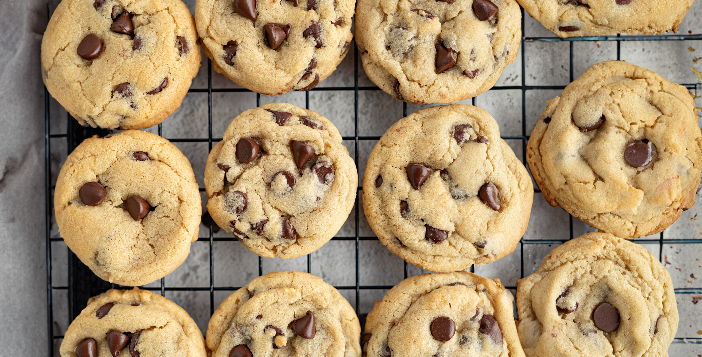

Bakery Style Chocolate Chip Cookies
Ultra thick Bakery Style Chocolate Chip Cookies feature golden brown edges with ooey and gooey centers. This easy recipe can be made in 30 minutes!
Ingredients
- 3 cups (380 grams) all-purpose flour
- 1 teaspoon baking soda
- 1 teaspoon fine sea salt
- 2 sticks (227 grams) unsalted butter, at cool room temperature
- ½ cup (100 grams) granulated sugar
- 1¼ cups (247 grams) lightly packed light brown sugar
- 2 teaspoons vanilla
- 2 large eggs, at room temperature
- 2 cups (340 grams) semisweet chocolate chips
Instructions
- Preheat oven to 350° F. Line baking sheets with parchment paper.
- In a medium bowl, combine the flour, baking soda, and salt.
- In the bowl of an electric mixer, beat the butter, granulated sugar, and brown sugar until creamy, about 2 minutes. Scrape down the sides and bottom of the mixing bowl. Add the vanilla and eggs and beat until combined, scraping the bowl down as needed. Gradually beat in the flour mixture. Stir in the chocolate chips.
- Divide the dough into 3-tablespoon sized balls using a large cookie scoop and drop onto prepared baking sheets.
- Bake for 11-13 minutes, or until golden brown. Cool for 5 minutes before removing to wire racks to cool completely.
- Although I prefer cookies fresh from the oven, these can be stored in an airtight container for up to 3 days. See post for storage tips.
Recipe Notes
Be sure to measure your flour correctly. I highly recommend using a digital kitchen scale to weigh your flour, or use the spoon and level method if you don’t have a scale. Improper measuring can cause cakey cookies, or cookies that don’t spread. I also highly recommend using bleached all-purpose flour, as unbleached flour may cause dry, crumbly cookies.